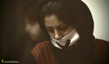

|
|
|
Navigation
Contact Us |
Campaigners |
Face to Face |
Tribune |
Interview |
News |
On the Web |
One Million |
Report
Farsi | Français | German | Italian | Spanish | العربية In der gleichen Rubrik
|
 FRAUENBEWEGUNG IN IRAN HAFT UND SCHIKANENMontag 8. September 2008 Amnesty International Deutschland: "So lange Frauen irgendwo auf der Welt ihre Menschenrechte verweigert werden, kann es keine Gerechtigkeit und keinen Frieden geben". Mit dieser eindringlichen Warnung machten im März 2007 die iranische Menschenrechtsaktivistin und Nobelpreisträgerin Shirin Ebadi und die Generalsekretärin von Amnesty International, Irene Khan, in einem offenen Brief an die Regierung in Teheran auf die Diskriminierung der Frauenbewegung in Iran aufmerksam. Doch auch mehr als ein Jahr später sind die iranischen Frauen immer noch weit von Frieden und Gerechtigkeit entfernt. Nach wie vor werden Frauen in Iran als Bürger zweiter Klasse behandelt. Frauen können weder Richterinnen werden noch für das Präsidentschaftsamt kandidieren. Bei Heirat, Scheidung, Erbschaften und Sorgerecht haben sie nicht die gleichen Rechte wie Männer; vor Gericht ist die Aussage einer Frau nur halb so viel wert wie die eines Mannes. Wer sich gegen die rechtliche und alltägliche Diskriminierung von Frauen in der iranischen Gesellschaft engagiert, muss mit Haft, Misshandlungen und Schikanen rechnen. Vor allem seit Beginn der landesweiten "Kampagne für Gleichberechtigung" im August 2006 hat die Regierung die Frauenbewegung im Visier. Unter vage formulierten Vorwürfen lassen die iranischen Behörden Dutzende AktivistInnen verhaften. Immer wieder löst die Polizei friedliche Demonstrationen gewaltsam auf, bedroht und behindert Unterstützerinnen und Unterstützer der Frauenbewegung. Amnesty International dokumentiert seit zwei Jahren zahlreiche Vorfälle, bei denen AktivistInnen eingeschüchtert und drangsaliert werden: Sie empfangen Drohanrufe von Personen, die sich als Angehörige des Geheimdienstministeriums ausgeben und sie warnen, an geplanten Versammlungen teilzunehmen. Die AktivistInnen werden daran gehindert, friedliche Demonstrationen abzuhalten. Die Website ihrer Kampagne wurde mindestens elf Mal von den Behörden blockiert. Auch die Justiz hat den Druck auf die FrauenaktivistInnen in den vergangenen Monaten erhöht. Eine der Betroffenen ist Hana Abdi. Sie wurde wegen "gemeinschaftlicher Planung eines Verbrechens gegen die nationale Sicherheit" zur Höchststrafe von 5 Jahren Haft verurteilt. Abdi ist Angehörige der kurdischen Minderheit und Mitglied der Kampagne in der kurdischen Provinz sowie der NGO Azad Mehr. Im August 2008 wurde Hana Abdi in das Büro des Staatsanwalts zitiert und davor gewarnt, Informationen aus dem Gefängnis nach draußen zu geben. Andernfalls würde sie außerdem noch wegen "Propaganda gegen den Staat" angeklagt werden. Ronak Safarzadeh, eine Mitstreiterin von Hana Abdi, sitzt nach wie vor in Haft, wo sie den Ausgang ihres Prozesses wegen "Feindschaft zu Gott" erwartet. Auf diese Anklage kann die Todesstrafe stehen. Zeynab Bayzeydi ist Frauenrechtlerin und Mitglied der "Menschenrechtsorganisation Kurdistans" (HROK). Im August wurde sie wegen der Mitgliedschaft in einer verbotenen Menschenrechtsvereinigung zu vier Jahren Haft und inneriranischem Exil (d. h. sie wird innerhalb des Irans, allerdings weit von ihrem Wohnort und ihrer Familie entfernt, ins Exil geschickt) verurteilt worden. Das Berufungsgericht hat das Urteil inzwischen bestätigt. Delaram Ali ist im Juni 2006 festgenommen worden, weil sie zusammen mit 70 anderen Personen an einer Demonstration gegen die gesetzliche Diskriminierung von Frauen in Iran teilgenommen hatte. Ein Jahr später erging das Urteil: Delaram Ali wurde wegen der "Teilnahme an einer illegalen Versammlung", "Propaganda gegen das System" und "Störung der öffentlichen Ordnung" zu 34 Monaten Freiheitsstrafe und zehn Peitschenhieben verurteilt. Nach einem Einspruch ist das Urteil auf 30 Monate herabgesetzt worden. Ali befindet sich noch immer in Haft, obwohl das Urteil inzwischen aufgehoben wurde und ihr Fall geprüft wird. Amir Yaghoub-Ali wurde im Mai 2008 zu einer einjährigen Haftstrafe verurteilt, weil er im Juli 2007 im Teheraner Daneshjou-Park Unterschriften gesammelt hatte. Das Berufungsgericht hat die Strafe für vier Jahre auf Bewährung ausgesetzt. Yaghoub Ali muss sich während der Bewährungszeit alle vier Monate im lokalen Büro des Geheimdienstministeriums melden. Die iranischen Behörden benutzen häufig Bewährungsstrafen als Instrument, um die FrauenaktivistInnen zum Schweigen zu bringen: Bei einer weiteren Verurteilung ist die Verbüßung der kompletten Bewährungsstrafe zwingend vorgeschrieben. Am 14. Juli 2008 hat das Revolutionsgericht Nasrin Sotoudeh, eine bekannte Menschenrechtsanwältin, und Mansoureh Shoja’i, Mitglied der Frauenrechtskampagne, wegen "Handlungen gegen die Staatssicherheit durch unerlaubten Kontakt mit im Ausland lebenden Iranern" angeklagt. Die beiden Frauen hatten anlässlich des Internationalen Frauentages nach Dubai reisen wollen, um dort an den von ExiliranerInnen organisierten Feierlichkeiten teilzunehmen. Sie wurden am 14. Februar verhaftet und für fast zwei Wochen festgehalten, bevor sie auf Kaution freigelassen worden sind. Ein Urteil wurde bis jetzt nicht verkündet. Auch der Ausgang des Verfahrens gegen die Journalistin und Frauenrechtlerin Mahboubeh Karami ist noch offen. Sie war seit dem 13. Juni 2008 im Evin-Gefängnis inhaftiert und ist Mitte August wegen "Handlungen gegen die nationale Sicherheit" angeklagt worden. Am 25. August wurde sie gegen eine Kaution von 1 Million Rai (umgerechnet ca. 110.000 US-Dollar) freigelassen. Maryam Hosseinkhah, Parvin Ardalan, Jelveh Javaheri und Nahid Kesharvarz sind wegen "Handlungen gegen die nationale Sicherheit" angeklagt. Die Gerichtsverhandlungen fanden in Anwesenheit der Anwälte, jedoch unter Ausschluss der Öffentlichkeit statt. Die vier Frauen sind Anfang September zu jeweils sechs Monaten Haft verurteilt worden. Ihre Anwälte gehen jedoch in die Berufung. Amnesty International fordert die iranische Regierung erneut auf, Interview mit Sussan Tahmaseb, einer der Gründerinnen der "Kampagne für Gleichberechtigung |